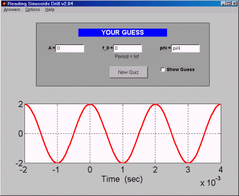

|  |
Sindrill is a program that helps master
the understanding of sinusoids and enhances the ability to quickly identify their
essential characteristics.
Features:
- A variety of signals from two difficulty levels are generated for the user to
guess the values of.
- The user's guess can be plotted against the actual sinusoid at any time.
- The actual characteristics of the sinusoid are hidden until the student
wishes to reveal them by opening the Answers
menu.
|